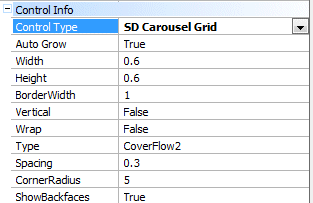

Design Systems
The concept of Design Systems consists of achieving application designs that are consistent, maintain the same style, and reuse the same aesthetics.
It also proposes to be able to systematize and reuse components to avoid redesigning them repeatedly.
At the same time, it integrates and speeds up the interaction between designers and developers.
What makes up a Design System?
A Design System is a group of:
- Principles (that define what good design is in your industry. Such as, for example, one that is mostly clear above all other aspects, followed by efficiency, consistency, and appearance in the last place).
- Patterns (such as typography, the colors to be used for different parts, and so on) and functional patterns (like the division into components that may be assembled as puzzles to make up the screens and thus convey the idea of an organic app).
- Practices (like the tools with which you develop/design, and how you do it, among other things).
This set of principles, patterns and practices are oriented toward building a digital product that is coherent, uniform and robust.
Design systems are not universal. Even when they share consensuses, they are defined for each digital product or family of digital products, and they also depend on the tools you have available at a given time within the software industry.
By just observing the apps you use on a daily basis (for example, email apps, messaging apps or social network apps) you can identify some of their aspects that make it easy for you to intuitively interact with them, since their viewing and their type of interaction are the same, regardless of platforms and screen sizes, allowing you to recognize them with a naked eye.
Definitely, you want to seduce users and make them love your app, so you have a growing need for defining Design systems.
What does GeneXus offer?
GeneXus provides three levels of Design to speed up development:
1. Bundled
2. Accelerators
3. BYODS
1. Bundled
- Carmine Design System, now updated also to Dark Carmine.
- SAP Fiori 2.0 and SAP Fiori 3.0.
2. Accelerators
Accelerators are Design Systems and Patterns provided by our Partners, for example:
- Ignia Framework by Simplifica
- WorkWithPlus by DVelop
-  by K2B
3. Bring Your Own Design System (BYODS)
Trough several GeneXus objects and features, GeneXus simplifies the incorporation of Custom Design Systems inside GeneXus: Master Pages, Themes, Design System objects, Stencils, User Controls, Patterns, Live Editing, Sketch Import, etc.
How do you create a Design System?
- Start with its purpose.
- Specify who the audience is.
- Find Themes and share them with the team.
- Test and evolve the principles.
Videos
 Design Systems Introduction
Design Systems Introduction
GeneXus default Design System
- UI screens framework and behavior
- Styling
- Themes
- Design System Object
- Design System Styles
- Design System Tokens
- Design System Tokens Options
- Image variation by Tokens options
- System Options
- My First Design System
- Creation
- From scratch
- Fundamental bases
- Developing an application
- Design abstractions for your screens
- Design and Behavior Abstractions
- Automatic import of the designers’ design
- By Importing
- Based on another
- From scratch
- Comparison between Theme and Design System objects
- Conversion from Theme to Design System
- Stencil object
- User Control object
- Related topics to work with it
- Advanced usages
- KB Sample
- Patterns
- See Also